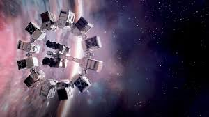
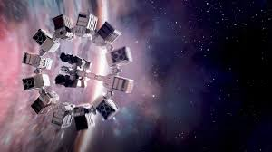

About the Film
"Interstellar," directed by Christopher Nolan, is a visually stunning science fiction film that explores the depths of space and the bonds of love. Released in November 2014, the film follows Cooper, a former NASA pilot played by Matthew McConaughey, who is tasked with leading a mission to find a new habitable planet for humanity. The film delves into profound themes such as sacrifice, the power of love across time and space, and the human spirit's resilience. With a compelling screenplay co-written by Nolan and Jonathan Nolan, "Interstellar" challenges viewers to ponder the complexities of time, existence, and human connection.
Cast and Characters
The film features an exceptional cast, including Anne Hathaway as Amelia Brand, a scientist working alongside Cooper. Jessica Chastain portrays Murphy Cooper, Cooper's daughter, who plays a pivotal role in the narrative. Michael Caine appears as Professor Brand, who guides the team with his expertise. Each character adds depth to the story, showcasing the emotional stakes of their interstellar journey.
Reviews
Critically acclaimed, "Interstellar" received praise for its ambitious storytelling and visual effects. It boasts a high rating on platforms like Rotten Tomatoes and Metacritic, with many critics lauding its emotional depth and thought-provoking concepts. Quotes from notable film critics highlight the film's impact, emphasizing its place in contemporary cinema and its resonant themes.
Gallery
.jpg)
.jpg) 
